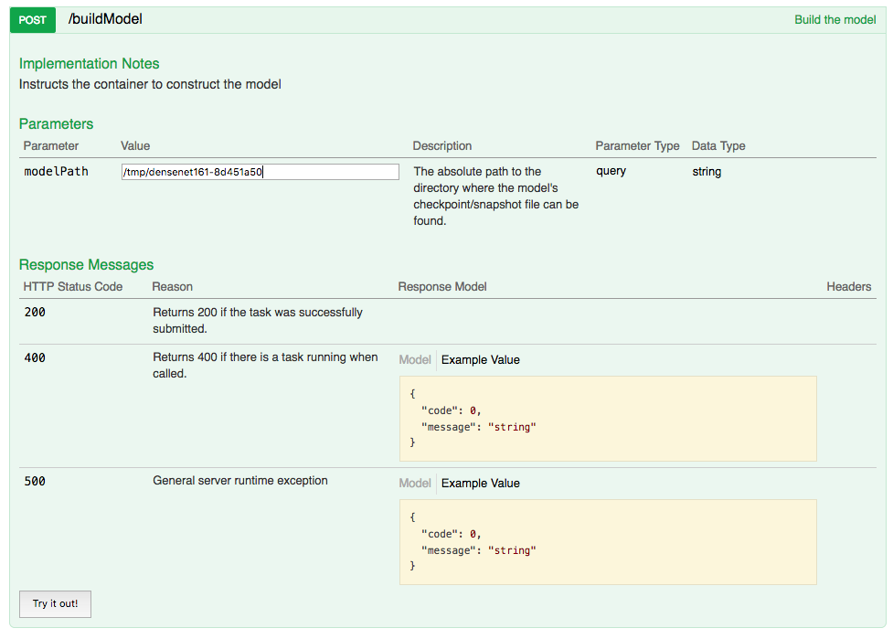

Testing¶
Running the Model¶
All models are ultimately run as web services with endpoints corresponding to the implemented AbstractModel methods. The model endpoint service is supplied by the mistk module. To run the model endpoint service, call:
python -m mistk [module] [class]
where ‘module’ is the python module being loaded and ‘class’ is the class which implements AbstractModel as described above. This will start the endpoint service listening on the localhost at port 8080. You can view the endpoint API by browsing to http://localhost:8080/v1/mistk/ui.
You must ensure that the module files are on the PYTHONPATH or are executing the command model’s project base directory. An example of executing the linear regression model previously referenced:
python -m mistk scikit_learn.logistic_regression ScikitLearnLogisticRegressionModel
You can then use the UI to manually kick off instructions to the model.
Running in Eclipse and PyDev¶
The following steps assume that Eclipse has been installed, along with the PyDev Eclipse plugin, the MISTK library has been installed in your python environment, developer has familiarity with Eclipse debugging tools, and your Python path has been properly configured.
Create a new Python run configuration similar to the example below and update the highlighted fields with your project specific values.
Running the program should produce the following output in Eclipse (along with any additional logging you perform):
You should also be able to access the Model Instance Endpoint Swagger UI through web browser at http://localhost:8080/v1/mistk/ui/
Testing through the RESTful API¶
The RESTful API for a running model can be accessed at http://localhost:8080/v1/mistk/ui. The RESTful API endpoints correspond to the Pythonic API endpoints (ie. MISTK model methods beginning with ‘do_’) in terms of their input parameters and return values. The primary difference is that parameter names are in camelcase format rather than underscored (ie. datasetMap vs. dataset_map). The API method call examples below include sample input arguments when running the PyTorch model.
Initialize Model¶
Build Model¶
Load Data¶
Save Predictions¶
Save Model Checkpoint¶
Test and Validation Harness¶
Model implementations can also be validated using the Test Harness application, instead of manually accessing the RESTful endpoints. The Test Harness is a command-line application that can exercise model implementations via the model endpoints, launching the model within its Docker container (see Containerization section), or launching the model within the test harness itself. The Test Harness should be used by model developers to ensure that their model implementations properly implement all interfaces and can be integrated into the MISTK framework. It provides streamlined testing for model implementations. The Test Harness Python wheel files can be downloaded from the MISTK Github Repository Releases page and installed with pip:
pip install mistk-test-harness-*-py3-none-any.whl
The Test Harness accepts a number of optional parameters to specify which model activities should be run (i.e. training, testing, evaluation, etc.) and can be used to exercise all model endpoints except pause, resume, and terminate. The Test Harness also has the capabilities to perform data transformations as well as evaluating a model with different metrics. The parameters and example usage are below, and can also be retrieved by running the Test Harness with the ‘-h’ option:
usage: python -m mistk_test_harness [-h] [--model MODEL] [--train PATH]
[--transfer-learning] [--predict PATH]
[--model-path PATH]
[--model-save-path PATH]
[--model-props FILE] [--hyperparams FILE]
[--stream-predict FILE]
[--transform TRANSFORM]
[--transform-output-path PATH]
[--transform-input-paths PATH [PATH ...]]
[--transform-properties FILE]
[--evaluate TYPE]
[--evaluation EVALUATION]
[--predictions-path PATH]
[--ground-truth-path PATH]
[--evaluation-output-path PATH]
[--evaluation-properties FILE]
[--metrics METRIC]
[--disable-container-shutdown] [--logs]
Test harness for validating model implementations
optional arguments:
-h, --help show this help message and exit
--model MODEL Model module/package, service endpoint URL, or Docker
image
--train PATH Train over the dataset at the local path
--transfer-learning Flag indicating that the training operation will be
performing transfer learning
--predict PATH Run predictions over the dataset at the local path
--evaluate TYPE Evaluate model predictions as one of:
BinaryClassification, MultilabelClassification,
MulticlassClassification, Regression (requires
--predictions-path, --ground-truth-path)
--predictions-path PATH
Local folder path to save/load model predictions, used
with the --predict and --evaluate options
--ground-truth-path PATH
Local folder path containing dataset ground truth,
used with the --evaluate option
--model-path PATH Local folder path to load model checkpoints, used with
the --train or --predict options
--model-save-path PATH
Local folder path to save model checkpoints, used with
the --train option
--model-props FILE Local file containing json dictionary of model
properties
--hyperparams FILE Local file containing json dictionary of model
hyperparameters
--stream-predict FILE
Local file containing json dictionary of ids to base64
encoded input data
--transform TRANSFORM
Transform module/package, service endpoint URL, or
Docker image
--transform-output-path PATH
Local folder path to save results of transformation
--transform-input-paths PATH [PATH ...]
One or more local folder paths to be used as input
directories when performing a transformation
--transform-properties FILE
Local file containing json dictionary of transform
properties
--evaluation EVALUATION
Evaluation module/package, service endpoint URL, or
Docker image
--evaluation-output-path PATH
Local folder path to save results of evaluation
--evaluation-properties FILE
Local file containing json dictionary of evaluation
properties
--metrics METRIC Comma delimited list of metric names for metrics to be
evaluated.
--disable-container-shutdown
Disables automatic shutdown of the model or transform
docker container
--logs Show all MISTK log output (debug)
Examples:
python -m mistk_test_harness --train /my/dataset/folder --model-path /my/model/folder --model-save-path /my/trained/model/folder --model mymodel.MyImplementedModel
python -m mistk_test_harness --train /my/dataset/folder --model-path /my/model/folder --model-save-path /my/trained/model/folder --model http://localhost:8080
python -m mistk_test_harness --train /my/dataset/folder --model-path /my/model/folder --model-save-path /my/trained/model/folder --model repo/mymodelimpl
python -m mistk_test_harness --predict /my/dataset/folder --model-path /my/model/folder --predictions-path /my/predictions/folder
--ground-truth-path /ground/truth/folder --evaluate BinaryClassification --model mymodel.MyImplementedModel
python -m mistk_test_harness --evaluate BinaryClassification --predictions-path /my/predictions/folder --ground-truth-path /ground/truth/folder
--evaluation-output-path /evaluation/output/folder
python -m mistk_test_harness --evaluate BinaryClassification --predictions-path /my/predictions/folder --ground-truth-path /ground/truth/folder
--evaluation-output-path /evaluation/output/folder --evaluation myevaluation.MyImplementedEvaluation
python -m mistk_test_harness --evaluate MulticlassClassification --predictions-path /my/predictions/folder --ground-truth-path /ground/truth/folder
--evaluation-output-path /evaluation/output/folder --evaluation http://localhost:8080
python -m mistk_test_harness --evaluate MulticlassClassification --predictions-path /my/predictions/folder --ground-truth-path /ground/truth/folder
--evaluation-output-path /evaluation/output/folder --evaluation http://localhost:8080 --metrics sklearn.metrics.recall_score,sklearn.metrics.precision_score
python -m mistk_test_harness --transform-output-path /tmp/ --transform-input-paths /my/input/folder/1 /my/input/folder/2 ... /my/input/folder/n
--transform-properties /my/properties/file --transform mytransform.MyTransformImplementation
python -m mistk_test_harness --transform-output-path /tmp/ --transform-input-paths /my/input/folder --transform http://localhost:8080
python -m mistk_test_harness --transform-output-path /tmp/ --transform-input-paths /my/input/folder --transform repo/mytransformimpl
The ‘–train’ and ‘–predict’ parameters take a path to a folder containing the data for training and testing, respectively. These paths will be passed to the model during the load_data stage.
The ‘–predictions-path’ is a folder that will be passed to the model during the save_predictions stage. The ‘–ground-truth-path’ is a folder containing dataset ground truth. Ground truth should be formatted in accordance with the Predictions and Ground Truth section and be named ground_truth.csv.
The ‘–model-path’ parameter is a folder for loading model checkpoints. This path is passed to the model during the build_model stage.
The ‘–model-save-path’ parameter is a folder for saving model checkpoints after training. This path is passed to the model during the ‘save_model’ stage.
The ‘–stream-predict’ parameter points to a JSON file containing key-value pairs of ids and base64 encoded values for prediction.
The ‘–model-props’ and ‘–hyperparams’ parameters point to JSON files containing key-value pairs of any variables specific to the model. These variables and values will be passed to the model during the initialize stage. Below are some examples of valid json:
{
"samples_fit": 768,
"learning_rate": 0.01,
"arch": "densenet"
}
The Test Harness accepts three types of parameters for MODEL. The first is to simply pass the model class directly in the format of package.module.ClassName. The model must be loadable from the system path. The second is to pass the URL for an already running model instance. The standard URL would be of the form http://localhost:8080. Finally, the third option for passing a model is to pass a built Docker image. In this case, the Test Harness will start the container and connect to it. The format to use for this method is [<registry-host:port>/]repo/name[:tag].
Example output from validating a train/predict workflow is below:
Called 'initialize' on model, waiting for state change to 'initialized'
Model state: initialized
Called 'build_model' on model, waiting for state change to 'initialized'
Model state: initialized
Called 'load_data' on model, waiting for state change to 'ready'
Model state: ready
Called 'train' on model, waiting for state change to 'ready'
Model state: training ({'samples_fit': 768})
Model state: ready
Called 'save_model' on model, waiting for state change to 'ready'
Model state: ready
Called 'predict' on model, waiting for state change to 'ready'
Model state: predicting ({'samples_predicted': 768})
Model state: ready
Called 'save_predictions' on model, waiting for state change to 'ready'
Model state: ready
Validation completed
Of note, the Test Harness application suppresses standard python logging output by default. Pass the ‘–logs’ parameter to show all logging output on the console.
Validation Metrics¶
The Test Harness runs various metrics against model predictions when passed the ‘–evaluate’ flag to aid the developer in determining model correctness and performance. The evaluation output will be saved in JSON format at the path specified with the ‘–evaluations-output-path’ flag. The Test Harness provides default metrics to evaluate models, but additional metrics can be added through using an evaluation module/container with the ‘–evaluation’ flag.
The evaluation types and default metrics:
Binary Classification:
Accuracy - The percentage of samples predicted correctly.
Matthews Correlation Coefficient - The Matthews correlation coefficient is used in machine learning as a measure of the quality of binary and multiclass classifications. It takes into account true and false positives and negatives and is generally regarded as a balanced measure which can be used even if the classes are of very different sizes.
Hamming Loss - The fraction of labels that are incorrectly predicted.
F1 Score - Metric measuring the weighted average of the precision and recall, where an F1 score reaches its best value at 1 and worst score at 0.
Log Loss - This is the loss function used in (multinomial) logistic regression and extensions of it such as neural networks, defined as the negative log-likelihood of the true labels given a probabilistic classifier’s predictions.
F-beta Score - Metric measuring the weighted harmonic mean of precision and recall, reaching its optimal value at 1 and its worst value at 0.
Recall - The ratio of true positions to the sum of true positives and false negatives.
Precision - The ratio of true positions to the sum of true positives and false positives.
Brier Score - A proper score function that measures the accuracy of probabilistic predictions. It is applicable to tasks in which predictions must assign probabilities to a set of mutually exclusive discrete outcomes.
ROC - A receiver operating characteristic (ROC), or simply ROC curve, is a graphical plot which illustrates the performance of a binary classifier system as its discrimination threshold is varied. It is created by plotting the fraction of true positives out of the positives (TPR = true positive rate) vs. the fraction of false positives out of the negatives (FPR = false positive rate), at various threshold settings. TPR is also known as sensitivity, and FPR is one minus the specificity or true negative rate.
ROC AUC - Metric computing the area under the receiver operating characteristic (ROC) curve, which is also denoted by AUC or AUROC. By computing the area under the roc curve, the curve information is summarized in one number.
Multiclass/Multilabel Classification:
Accuracy - The percentage of samples predicted correctly.
Hamming Loss - The fraction of labels that are incorrectly predicted.
F1 Score - Metric measuring the weighted average of the precision and recall, where an F1 score reaches its best value at 1 and worst score at 0.
Log Loss - This is the loss function used in (multinomial) logistic regression and extensions of it such as neural networks, defined as the negative log-likelihood of the true labels given a probabilistic classifier’s predictions.
F-beta Score - Metric measuring the weighted harmonic mean of precision and recall, reaching its optimal value at 1 and its worst value at 0.
Recall - The ratio of true positions to the sum of true positives and false negatives.
Precision - The ratio of true positions to the sum of true positives and false positives.
Regression:
Explained Variance - The explained variance regression score.
Mean Absolute Error - A risk metric corresponding to the expected value of the absolute error loss or l1-norm loss.
Mean Squared Error - A risk metric corresponding to the expected value of the squared (quadratic) error or loss.
Mean Squared Log Error - A risk metric corresponding to the expected value of the squared logarithmic (quadratic) error or loss.
R2 Score - The coefficient of determination, representing the proportion of variance (of y) that has been explained by the independent variables in the model